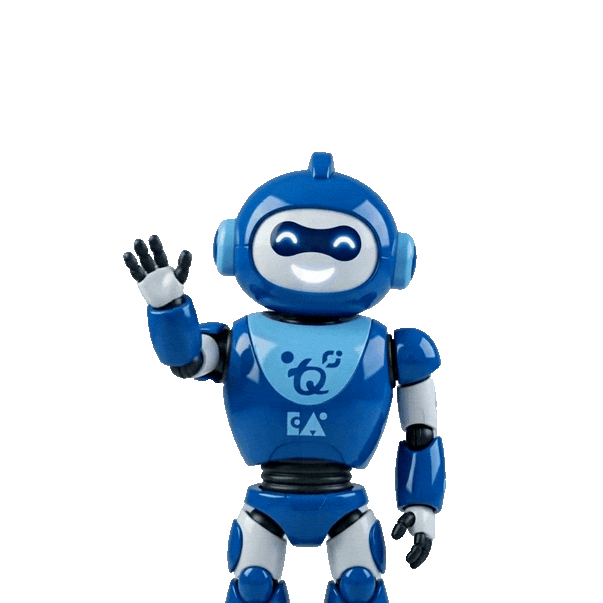
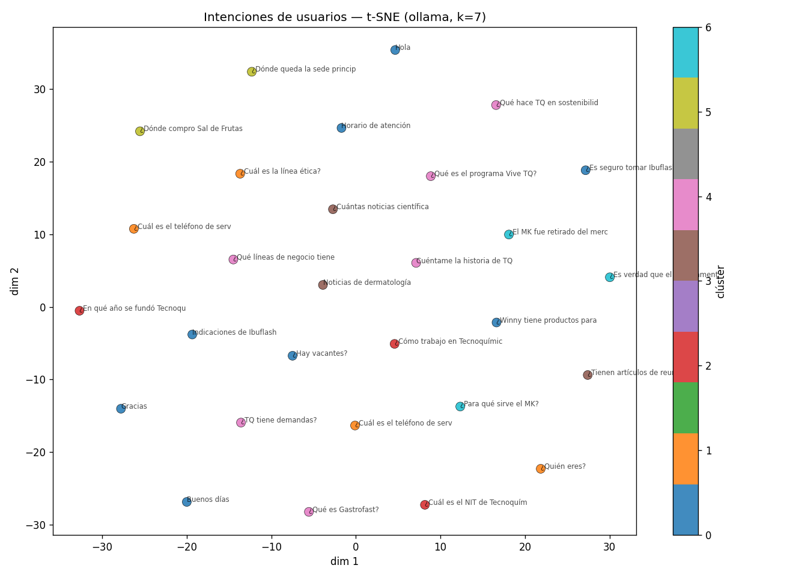
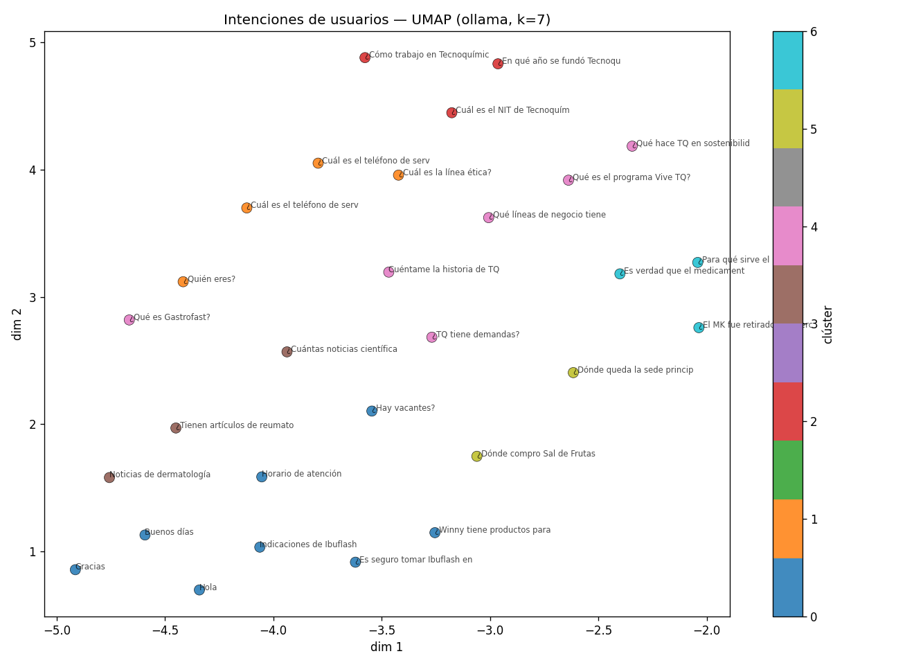
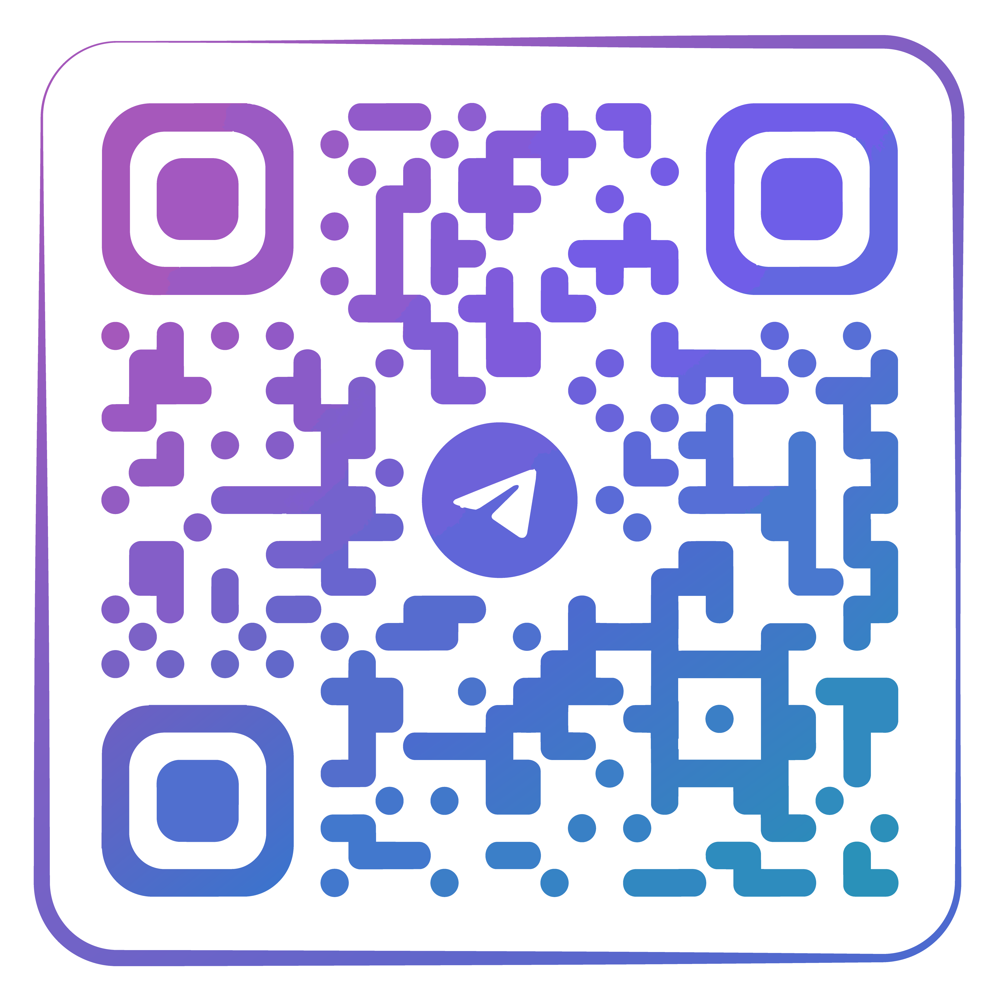

El repositorio agéntico definitivo. Convirtiendo artículos científicos y datos corporativos en inteligencia conversacional 100% local y segura.
De un mar de documentos estáticos a un ecosistema conversacional autónomo.
Convertir una vasta cantidad de artículos científicos de un portal web en un repositorio agéntico accesible y dinámico. El reto crítico: alucinar un dato o consejo médico en la industria farmacéutica es un riesgo legal inaceptable. Además, por soberanía de datos, la información corporativa no puede ser enviada a APIs en la nube.
Despliegue de un Agent OS 100% local en Rust. Usamos modelos Qwen3:8b y Qwen3-Embedding:0.6b vía Ollama para RAG hiper-preciso. El sistema deriva temas sensibles directamente a canales oficiales del INVIMA, e incluye un agente OSINT (collector-tq) vigilando a la industria 24/7.
Visualización de la capa de puertos y adaptadores interactuando con la memoria de 6-capas en el Módulo 3.
Gateway Node externo (Pto 3009)
Adaptador Nativo (Token en .env)
AGENT OS
Qwen3:8b Local Server
SQLite (Vector + KV + Grafo)
De un prototipo inicial a un ecosistema agéntico completamente estructurado.
| Componente | M1 Prototipo Inicial | M2 Arquitectura Orquestada | M3 Despliegue Producción |
|---|---|---|---|
| LLM | Gemini 2.5 Flash | Qwen3-8B local | Qwen3-8B local |
| Embeddings | Ninguno | Qwen3-Emb-0.6B | Qwen3-Emb-0.6B |
| Vector store | Ninguno | Chroma | 6-layer OS |
| Memoria | Sin memoria | AsyncSqliteSaver | OS canónico |
| Orquestación | LangChain LCEL | LangGraph | OpenFang |
| Interfaz | Streamlit | Next.js 15 | Telegram+WhatsApp |
| Autonomía | Reactivo | Reactivo | Proactivo (Hand) |
| Observ. | Ninguna | LangSmith | Dashboard+Hand |
Un viaje a través de las 9 capas de ingeniería que construyen a TQ-Asistente.
Portales corporativos e indexación de artículos médicos estructurados en JSON.
Evasión de WAF mediante comandos CLI. Extracción idempotente y multi-hilo en Python.
Chunks filtrados (600/100). Migración del Vector Store: de ChromaDB (M2) hacia SQLite unificado en OpenFang (M3).
Despliegue de Qwen3:8b sobre Ollama con Temperatura baja para asegurar respuestas clínicas precisas y seguras.
Prototipo inicial en Python (fuente de conocimiento). Router de 3 vías (direct/structured/rag) para ahorrar tokens.
Migración al entorno Rust. Agentes ejecutados en sandbox WASM y memoria centralizada en base de datos.
Integración vía Arquitectura Hexagonal. WhatsApp usa un gateway Node externo y Telegram su adaptador nativo.
Script offline (make tsne)
para visualizar clústeres de intención desde los logs, usando TF-IDF como fallback.


Clúster 1: contacto/ubicación · Clúster 2: identidad corporativa · Clúster 3: productos tqfarma · Clúster 4: conversación social
Gestión de dependencias con UV, validación de datos en backend y trazabilidad opcional (LANGSMITH_TRACING).
Escanea el código QR a continuación para iniciar una conversación segura y 100% local con nuestro agente de Telegram.
